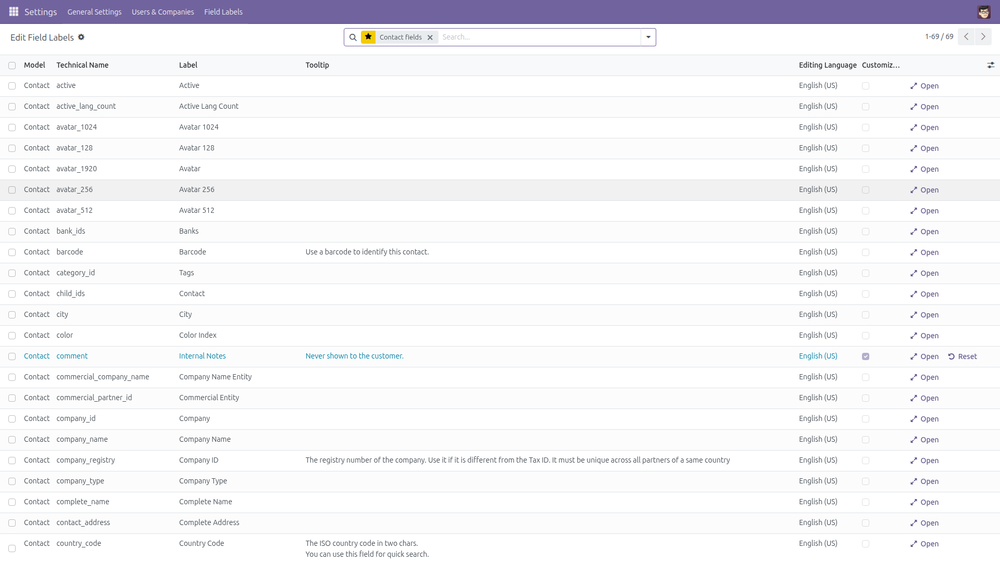
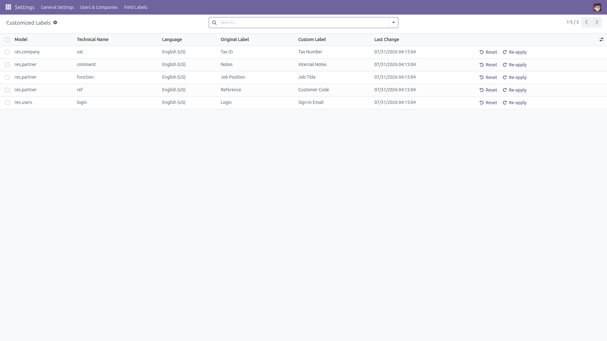
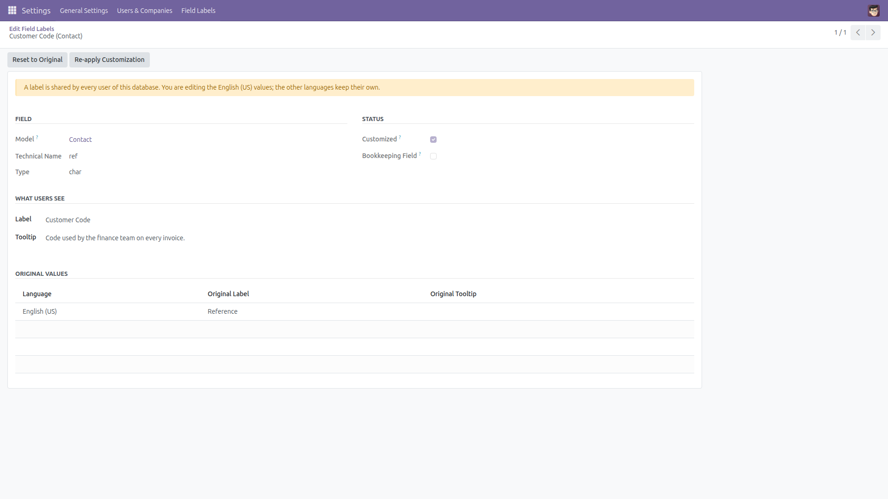
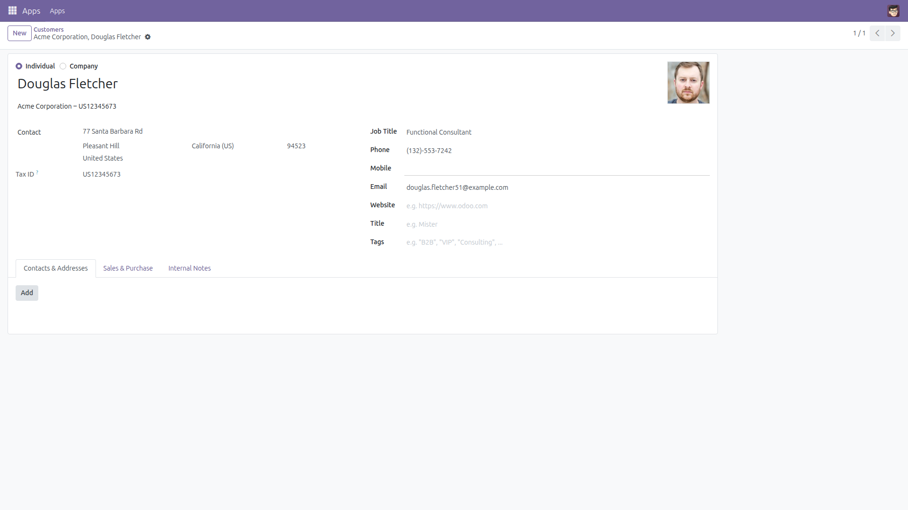

The problem
Every implementation reaches the moment where "Reference" should read "Customer Code",
or where a field needs a sentence explaining what your company actually puts in it.
Odoo can do it - but only through developer mode, Settings / Technical / Fields, in a
list of thousands of rows where a wrong click renames the wrong thing and nothing
records what you changed.
What this module does
- Pick a model, see its fields. Search the model in the search bar and the list shows
its user-facing fields with the label and the tooltip users see today.
- Edit in the list. Type a new label, type a tooltip, save. The change applies
to every user, on every form, list and report that shows that field - they see it on
their next page load.
- Add a tooltip where there was none. Not only overriding an existing help text:
fields that ship with no help at all can get one.
- Reset to the original, exactly. The first time a field is customized, the module
stores the label and the tooltip Odoo shipped. Reset writes those exact values back
and forgets the entry.
- Review everything you changed. A dedicated Customized Labels screen lists
every field you touched, with the original next to your value. Select rows and revert
them all from the Actions menu.
- Re-apply after an upgrade. Upgrading the Odoo module that owns a field restores its
built-in label; one click puts your version back, because your value is stored too.
- No technical noise. Bookkeeping columns (
create_uid, write_uid,
create_date, write_date, display_name, id
and anything starting with an underscore) are hidden by default; removing one filter shows them.
Read this before you rename anything
- A label is shared by every user of the database. There is no per-user labelling.
- Labels and tooltips are translatable. You always edit the language of your own
user session - the screen shows which one - and the other languages keep their own values.
To change a French label, switch your own user to French and edit it there.
- The screen is restricted to Settings administrators (
base.group_system).
- Some views override a label in their own XML (
<field name="x" string="..."/>).
That view wins over the field label, here as everywhere else in Odoo.
What is never touched
Only two things are ever written: the label and the help text of a field.
No field is created, renamed, retyped, moved or deleted, and no record of your business data
is read or modified.
Uninstalling removes the module's own table, but the labels you already applied stay applied -
uninstalling is not an undo. Reset what you want back to normal before uninstalling.
Screenshots
1. The editor - fields of one model, with their label and tooltip
Bookkeeping columns are hidden; the customized row is highlighted and offers Reset.

2. Everything you customized, with the originals
Reset or re-apply one row, or select many and use the Actions menu.

3. One field in detail
The language you are editing, the original values, and the Reset / Re-apply buttons.

4. The result, for every user
"Job Position" renamed to "Job Title" shows up on the contact form itself.

Installation
- Copy the
field_help_editor folder into your Odoo addons path.
- In Odoo, open Apps and click Update Apps List.
- Search for Edit Field Labels and Tooltips and click Install.
Configuration
- There is nothing to configure.
- Make sure the people who should use it have the Settings access right
(Settings / Users & Companies / Users / Administration = Settings).
- The menu lives in Settings / Field Labels. Developer mode is not needed.
Usage
- Go to Settings / Field Labels / Edit Field Labels.
- Type the model you are looking for in the search bar (for example Contact) and
pick the Model suggestion.
- Click the Label cell of the field you want to rename and type the new label.
Click the Tooltip cell to write the explanation users will see when they hover
the field. Save.
- Reload a form that shows the field: the new label and tooltip are there for everyone.
- To undo, click Reset on the row (or open the row and use Reset to Original).
The exact original label and tooltip come back.
- Go to Settings / Field Labels / Customized Labels to see everything that was changed,
revert several rows at once from the Actions menu, or Re-apply your labels
after an Odoo module upgrade restored the built-in ones.
- To see the bookkeeping columns, remove the Hide Bookkeeping Fields filter in the
search bar.
Good to know / limitations
- Upgrading the Odoo module that defines a field rewrites that field's label and help
from its source code, which undoes your change. Nothing is lost: the customization stays
listed and Re-apply puts it back.
- Emptying a tooltip removes your override for the language you are editing; the field then
shows the tooltip Odoo ships with it. The other languages are never touched.
- Abstract models and models your user cannot read are refused with a clear message
rather than silently ignored.
- On Odoo 14 and 15, the properties of a built-in field cannot be written at all, so
the module stores your label and tooltip as a translation entry of the language you are
editing - the way Settings / Translations does it. Two consequences on those two versions:
a customization applies strictly to the language you edited, and emptying a tooltip brings
back the field's built-in help text.
- Saving a label clears the label caches - and, on recent versions, reloads the field
registry - so a save takes a moment on very large databases. It is an administrator
action, not something users do all day.
- The module changes how a field's help text is resolved (
Field._description_help),
so that a tooltip can be added to a field that has none. On a server hosting several
databases in one process, the change applies only to the databases where this module is
installed. For any field you never customize, the text shown stays exactly the one Odoo
ships.